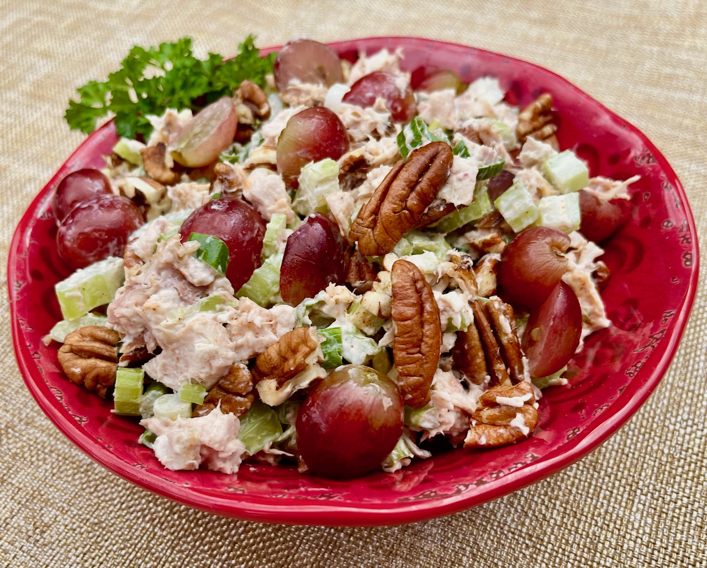

Smoked Chicken Salad

Grilling and Smoking Season
With grilling and smoking season coming on, it's nice to have a deliciously different way to use some
leftover smoked chicken. The great smoky flavor comes through the simple dressing, and the sweet taste of
red grapes complements it nicely. Serve over lettuce for a stand alone salad, or use in a sandwich, if you
prefer.
Ingredients
- 2 cups chopped leftover smoked chicken
- ⅔ cup chopped celery
- ½ cup halved seedless red grapes
- ¼ cup chopped pecans
- 3 medium scallions, white and green parts, chopped
- ½ cup mayonnaise
- 1 teaspoon raspberry vinegar
- ½ teaspoon ground paprika
- freshly ground black pepper to taste
Steps
- Combine chicken, celery, grapes, pecans, and scallions in a medium bowl.
- Stir mayonnaise, vinegar, paprika, and pepper together in a small bowl until well blended. Pour over
chicken mixture and stir until well combined.
- Serve immediately or refrigerate until ready to serve, up to 2 days.